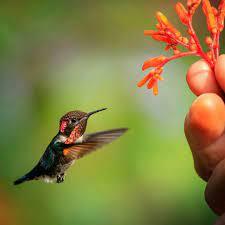
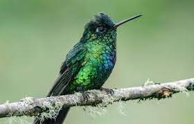
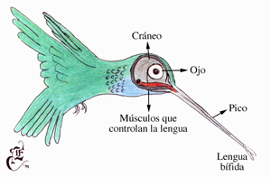
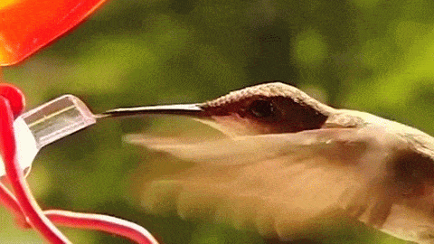
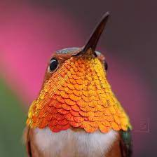

Los colibríes son especialmente famosos por su pequeño tamaño y su habilidad para volar ágilmente. Precisamente, esta última característica es parte fundamental de su vida al permitirle alimentarse de néctar mientras vuela, y escapar de sus depredadores con rapidez.

Es verdad: los colibríes son las aves más pequeñas del mundo, si bien su tamaño depende de la especie. El más pequeño es el zunzuncito o elfo de las abejas (Mellisuga helenae), nativo de Cuba e Isla de la Juventud, que mide solo 5 o 6 centímetros de longitud y pesa de 1.6 a 2 gramos.
En el otro extremo está el picaflor gigante (Patagona gigas), que alcanza hasta 23 centímetros de largo y entre 18 y 24 gramos de peso. Con base en estas medidas, es fácil tener una idea general sobre las dimensiones de las demás especies de colibríes. Gran parte de ellas miden de 6 a 12 centímetros de longitud y pesan de 2.5 a 6.5 gramos.

Los colibríes no pueden caminar sobre el suelo, pero sí posarse sobre las ramas. Por supuesto, también tienen diferentes formas y colores. La apariencia típica de todos se caracteriza por un cuerpo relativamente robusto con un pico largo y estrecho y patas pequeñas con 4 dedos cada una. El reducido tamaño de estas sugiere el poco desarrollo que presentan; no es raro que el orden al que pertenecen, Apodiformes, provenga del griego y signifique “sin pies”. Los colibríes no pueden caminar sobre el suelo, pero sí posarse sobre las ramas. Al hacerlo, el peso del cuerpo presiona los tendones y se bloquean las patas, lo que les impide caerse de las ramas mientras duermen.

El cráneo es ligero y las alas tienen fuertes tendones unidos a los músculos. Evidentemente, el esqueleto y los músculos esqueléticos están adaptados para una vida de continuo vuelo. Tienen un esternón hiperdesarrollado como todas las aves voladoras y los músculos pectorales pueden representar hasta el 40 por ciento del peso del ave. Son capaces de volar hacia atrás, hacia los lados y al revés, de sostenerse en un mismo lugar mientras permanecen en el aire y de volar hacia adelante a cerca de 45-54 kilómetros por hora. La cola, con 10 plumas timoneras, es más útil para volar hacia arriba, pero también otorga equilibrio y maniobrabilidad. El colibrí cola de espátula (Loddigesia mirabilis) es el único que tiene 4 plumas en la cola.
La longitud y forma del pico está en concordancia con su alimentación. Los picos más largos y curvados hacia abajo pueden alcanzar el néctar de las flores de forma más tubular y de corola arqueada, mientras que los rectos requieren del líquido de las flores tubulares pero rectas. No tienen dientes, pero sí una lengua larga que hacia el final se divide en dos secciones, las cuales, al momento de la alimentación, actúan como canales a través de los cuales corre el néctar hasta la garganta y más allá. Ellos poseen una molleja en donde los pocos alimentos sólidos son humedecidos con una secreción. Durante sus actividades en el aire son capaces de ejercer unas 500 respiraciones por minuto.

Su metabolismo es sumamente rápido, mucho mayor que el de los demás animales con excepción de los insectos. El corazón, que representa del 2 al 5 por ciento de su masa corporal total, late 500-700 veces por minuto en estado de reposo, y hasta más de 1,000 veces por minuto cuando está activo. Su requerimiento de oxígeno es mayor al de cualquier otro tipo de vertebrado, pero cuenta, como todos ellos, con 2 pulmones y 9 sacos aéreos. Durante sus actividades en el aire son capaces de ejercer unas 500 respiraciones por minuto. En las noches, el metabolismo de muchos colibríes se ralentiza y entran en torpor o letargo, un estado en el cual las funciones metabólicas se hacen más lentas, la temperatura disminuye y después se mantiene y las aves entran en un sueño profundo. Esto puede suceder diariamente si se presenta escasa disponibilidad de alimentos o si las noches son muy frías, como ocurre en zonas montañosas.La mayor parte de las especies de colibríes muestran dimorfismo sexual, es decir, diferencias en la apariencia física de los sexos. Muchas hembras suelen ser más grandes que los machos, pero estos tienden a mostrar plumaje de colores más variados, iridiscentes y llamativos, pues son los encargados de cortejar. La gama de colores incluye verdes, rojos, azules, anaranjados y marrones.
El grupo de los colibríes ermitaños exhibe colores menos variados y brillantes en comparación con otras especies, y algunas más tienen “gorgueras”, o la región del pecho de un vivo tono.